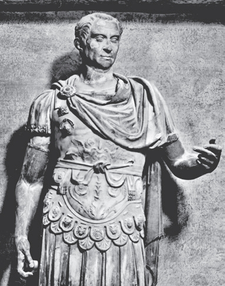
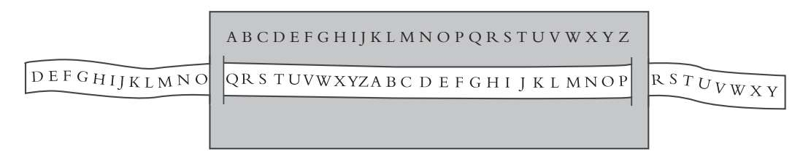
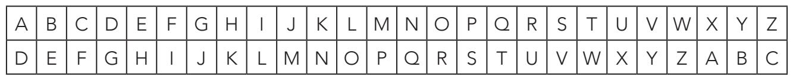

我来，我见，我征服。
——尤里乌斯·恺撒
替换加密是和换位加密同时发展起来的。与换位加密不同，严格的替换加密是用另外一个字母或任意符号替换原字母。与换位加密也不同，替换加密不仅涉及信息中出现的字母。在换位加密中，字母改变它的位置，但字母本身不变，原始信息与解密后的信息中，字母都是一样的，而在替换加密中，字母虽保持位置不动，但样子却变了，即原始信息与解密后的信息中，相同字母或符号代表的意义各不相同。波里比阿密码是以古希腊历史学家波里比阿（约前203-约前120）命名的，是已知最早的替换算法之一，这位历史学家给我们留下了相关记载，本书附录中也详细记录了他的方法。
盖乌斯·尤里乌斯·恺撒（前100-前44）
恺撒，政治家，军事家，独断专行，终结了罗马共和制。他曾任职西班牙行省的地方长官，之后与当时另外两个手握大权的人物庞培和克拉苏强强联合（恺撒把女儿尤利娅嫁给了庞培），形成了一个三人执政团，史称“前三头政治”。三人瓜分了罗马帝国。克拉苏管理东部行省，庞培依然控制罗马，恺撒则用军事控制了高卢地区，宣布自己为山南高卢的总督。当时，正值罗马向高卢开战，战争持续了8年，最终罗马胜利，高卢被征服。战后，恺撒带着大胜的军团进军帝国首都，宣布自己为唯一的独裁者。

公元前1世纪，大约在波里比阿密码出现50年后，另一种替换加密法出现了。它有个通用名称——恺撒密码，因为尤里乌斯·恺撒是它最著名的使用者之一。恺撒密码是密码学领域被研究最多的密码，它的实用性非常强，因为它阐明了模运算的原则，而模运算是加密文本的数学基础之一。
恺撒密码用字母表中每个字母下方对应的固定位数的字母进行替换。伟大的历史学家苏维托尼乌斯（Suetonius）在他的著作《罗马十二帝王传》（The Twelve Caesars）中提到，尤里乌斯·恺撒用一种替换算法给自己的私人信件加密，方法是这样的：把原信息中的每一个字母在字母表中向后推三个位置，用所对应的字母替换，如字母A用D替换，B用E替换，以此类推，W用Z代替，X、Y和Z对应的分别是A、B和C。
如下图所示，信息的加密和解密非常简单：

现在我们来详细探讨一下这个过程。下图中，两行各有26个字母，第一行是原始字母表，第二行是恺撒密码字母表，即把原始字母表向后推三个位置，与第一行对应的字母就是加密字母。

电影中的密码
经典科幻电影《2001太空漫游》是1968年由斯坦利·库布里克执导的作品。电影改编自亚瑟·C.克拉克的小说，主人公是一艘宇宙飞船的超级计算机，代号HAL 9000，被赋予意识，后来精神失常，企图谋杀人类船员。现在我们把“HAL”当作一条信息，用恺撒密码的方法加密，密钥为B，往后推一位。字母H对应I，A对应B，L对应M，也就是说，原信息“HAL”对应的加密信息就是“IBM”。IBM是当时世界上最大的电脑制造商。影片中这样安排，是在评论人工智能的危险或不受监管的商业力量的危害吗？还是只是个巧合？
电影《2001太空漫游》中HAL 9000的全视之眼。
把原始（也叫明文）字母表和加密字母表以这种方式排列好，解密信息就简单多了，只需替换对应的字母即可。密码对应的密钥就是原始字母表中的字母A对应的字母，即加密值。假设密钥为D，那么那句经典的“AVE CAESAR”（恺撒万岁）加密后的表达就是“DYH FDHVDU”。反过来，如果加密信息是“WUHH”，那么解密后的信息或明文信息就是“TREE”。假设一个密码破译者截获了使用恺撒密码加密的信息，而且知道使用了什么样的加密算法，但并不知道密钥，那他就必须要把所有可能的重新排序都试一遍，直到找到一条能够说得通的信息为止。要解密信息，就必须得挨个儿试，最坏的情况下，要把字母表中的所有字母都试一遍，也就是替换一遍。如果字母表中有n个字母，n种可能的替换就会产生n个密码。